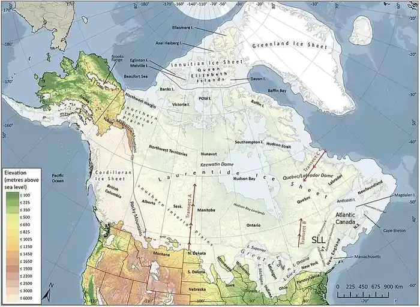

The models
The Clovis-first model held that people entered the Americas around 13,000 years ago, after an ice-free corridor opened, and spread rapidly. It dominated for decades, supported by distinctive stone points found across North America.
Maps, diagrams and images


The revisions
Pre-Clovis sites have accumulated: Monte Verde in Chile, dated to about 14,500 years ago; White Sands in New Mexico, with footprints dated to 23,000–21,000 years ago; and others. The coastal route — travel down the Pacific coast by boat — is now favoured by many, because the interior corridor may not have been viable until later.
The debate is about the reliability of the dates, the identity of the toolmakers, and whether some sites are genuinely cultural.
Documented: human presence before 13,000 years ago, at several sites.
Rejected: strict Clovis-first.
Contested: the earliest dates.
Favoured: a coastal route, by many researchers.
The honest label: live debate.
Why it is in the archive
Because it is a case where the textbook was replaced within a generation, and because the new dates keep arriving.
Open resources on this topic
- BookWho discovered America? : the untold history of the peopling of the Americas — Menzies, Gavin · 2013 (Internet Archive, free to read)
- BookWho Discovered America The Untold History Of The Peopling Of The Americas By Menzies Gavin — motivator8 · 2019 (Internet Archive, free to read)
- BookPeopling of the Americas : currents, canoes, and DNA — Peterson, Barbara Bennett, 1942- · 2011 (Internet Archive, free to read)
- PapersOpen-access articles: DOAJ · PubMed Central · Internet Archive Scholar
- BooksPublic-domain and borrowable copies: Open Library · Project Gutenberg · Google Books
More images
Cite this page
Momin, S. (2026). Peopling of the Americas. The Larger World Archive. https://drsamonline.github.io/LARGE_GLOBE/peopling-of-americas.htmlMomin, Sohil. “Peopling of the Americas.” The Larger World Archive, 2026, https://drsamonline.github.io/LARGE_GLOBE/peopling-of-americas.html.Momin, Sohil. “Peopling of the Americas.” The Larger World Archive, 2026. https://drsamonline.github.io/LARGE_GLOBE/peopling-of-americas.html.@misc{peopling2026peopling,
author = {Momin, Sohil},
title = {Peopling of the Americas},
year = {2026},
howpublished = {The Larger World Archive},
url = {https://drsamonline.github.io/LARGE_GLOBE/peopling-of-americas.html},
note = {Last reviewed 20 November 2026}
}Last reviewed 20 November 2026 · Corrections policy · this page is not peer reviewed
Sources for this page
- Wikipedia, “Peopling of the Americas” — the models and the evidenceen.wikipedia.org
- Wikipedia, “Clovis culture” — the old modelen.wikipedia.org
- Wikipedia, “Monte Verde” — a key siteen.wikipedia.org
- Wikipedia, “White Sands National Park” — the footprintsen.wikipedia.org